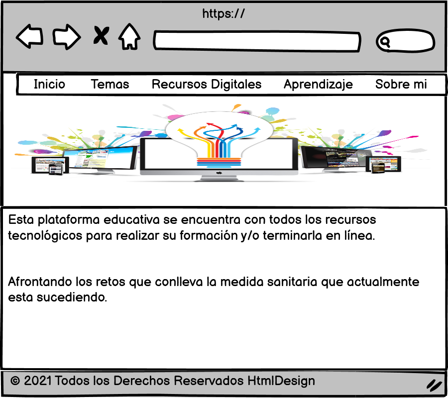

Boceto del Mokup

Funcionalidad de CSS
Es un lenguaje de hojas de estilos creado para controlar la presentación de los documentos electrónicos definidos con HTML y XHTML. Este lenguaje permite separar los contenidos y su presentación , es imprescindible para crear páginas web complejas.Permite definir los contenidos y la definición de su aspecto presenta numerosas ventajas, ya que obliga a crear documentos HTML/XHTML completos (también llamados "documentos semánticos").Mejorar la accesibilidad del documento, reduce la complejidad de su mantenimiento y permite visualizar el mismo documento en infinidad de dispositivos diferentes.Recuperado de: Recio García, J. A. (2016). HTML5, CSS3 y JQuery: curso práctico. RA-MA Editorial. (Pág. 52 a 108).
Recuperado de https://elibro-net.bibliotecavirtual.unad.edu.co/es/ereader/unad/106494?page=52
Tipos de estilos
Hoja de estilo externa
Es una hoja de estilo que está almacenada y ubicada en otro lugar en donde se almacena el código HTML de la página Web. Esto permite programar de manera mejor y eficiente porque al separar completamente las reglas de formateo para la página HTML de la estructura básica de la página y la aparencia a acoplarlo se puede usar e identificar fallas e inconvenientes.
Hoja de estilo interna
Es una hoja de estilo que está incrustada dentro de un documento HTML (Va a la derecha dentro del elemento ). De esta manera se obtiene el beneficio de separar la información del estilo, sobre el código HTML y en general es la única vez que usa una hoja de estilo interna, en donde se proporciona alguna característica a una página Web en un simple fichero. Recuperado de: Recio García, J. A. (2016). HTML5, CSS3 y JQuery: curso práctico. RA-MA Editorial. (Pág. 146 a 185).
Recuperado de https://elibro-net.bibliotecavirtual.unad.edu.co/es/ereader/unad/106494?page=146